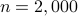
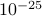
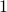
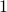
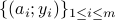
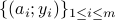

Solving Almost all Systems of Random Quadratic Equations
|
|
To show the power of RAF in the high-dimensional regime, the amplitude-based least-squares loss function value evaluated at the returned estimate for MC realizations is plotted (in negative logarithmic scale) in figure on the left, where the number of simulated noiseless measurements was set to be the information-theoretic limit, namely, , and for . It is self-evident that our proposed RAF approach returns a solution of function value smaller than  in all independent realizations even at this challenging information-theoretic limit condition. To the best of our knowledge, RAF is the first algorithm that empirically reconstructs any high-dimensional (say e.g., |
 ) signals exactly from an emph{optimal number} of random quadratic equations, which also provides a positive answer to the question posed easier in the Introduction.
) signals exactly from an emph{optimal number} of random quadratic equations, which also provides a positive answer to the question posed easier in the Introduction. |
|
The left figure compares the empirical success rate of five schemes
with the signal dimension being fixed at |
 while the ratio
while the ratio
 increasing by from  to . As clearly depicted by the plots, our RAF (the red plot) enjoys markedly improved performance over its competing alternatives. Moreover, it also achieves perfect signal recovery as soon as
increasing by from  to . As clearly depicted by the plots, our RAF (the red plot) enjoys markedly improved performance over its competing alternatives. Moreover, it also achieves perfect signal recovery as soon as Solving Almost all Systems of Random Quadratic Equations
Authors: G. Wang, G. B. Giannakis, Y. Saad, and J. Chen
This paper deals with finding an  -dimensional solution
-dimensional solution  to a system of quadratic equations of the form
to a system of quadratic equations of the form  for
for  , which is also known as phase retrieval and is NP-hard in general. We put forth a novel procedure for minimizing the amplitude-based least-squares empirical loss, that starts with a weighted maximal correlation initialization obtainable with a few power or Lanczos iterations, followed by successive refinements based upon a sequence of iteratively reweighted (generalized) gradient iterations. The two (both the initialization and gradient flow) stages distinguish themselves from prior contributions by the inclusion of a fresh (re)weighting regularization technique. The overall algorithm is conceptually simple, numerically scalable, and easy-to-implement. For certain random measurement models, the novel procedure is shown capable of finding the true solution in time proportional to reading the data . This holds with high probability and without extra assumption on the signal to be recovered, provided that the number
, which is also known as phase retrieval and is NP-hard in general. We put forth a novel procedure for minimizing the amplitude-based least-squares empirical loss, that starts with a weighted maximal correlation initialization obtainable with a few power or Lanczos iterations, followed by successive refinements based upon a sequence of iteratively reweighted (generalized) gradient iterations. The two (both the initialization and gradient flow) stages distinguish themselves from prior contributions by the inclusion of a fresh (re)weighting regularization technique. The overall algorithm is conceptually simple, numerically scalable, and easy-to-implement. For certain random measurement models, the novel procedure is shown capable of finding the true solution in time proportional to reading the data . This holds with high probability and without extra assumption on the signal to be recovered, provided that the number  of equations is some constant times the number of unknowns in the signal vector, namely, . Empirically, the upshots of this contribution are: i) (almost) perfect signal recovery in the high-dimensional (say e.g., ) regime given only an emph{information-theoretic limit} number of noiseless equations, namely,
of equations is some constant times the number of unknowns in the signal vector, namely, . Empirically, the upshots of this contribution are: i) (almost) perfect signal recovery in the high-dimensional (say e.g., ) regime given only an emph{information-theoretic limit} number of noiseless equations, namely,  in the real-valued Gaussian case; and, ii) (nearly) optimal statistical accuracy in the presence of additive noise of bounded support. Finally, substantial numerical tests using both synthetic data and real images corroborate markedly improved signal recovery performance and computational efficiency of our novel procedure relative to state-of-the-art approaches.
in the real-valued Gaussian case; and, ii) (nearly) optimal statistical accuracy in the presence of additive noise of bounded support. Finally, substantial numerical tests using both synthetic data and real images corroborate markedly improved signal recovery performance and computational efficiency of our novel procedure relative to state-of-the-art approaches.